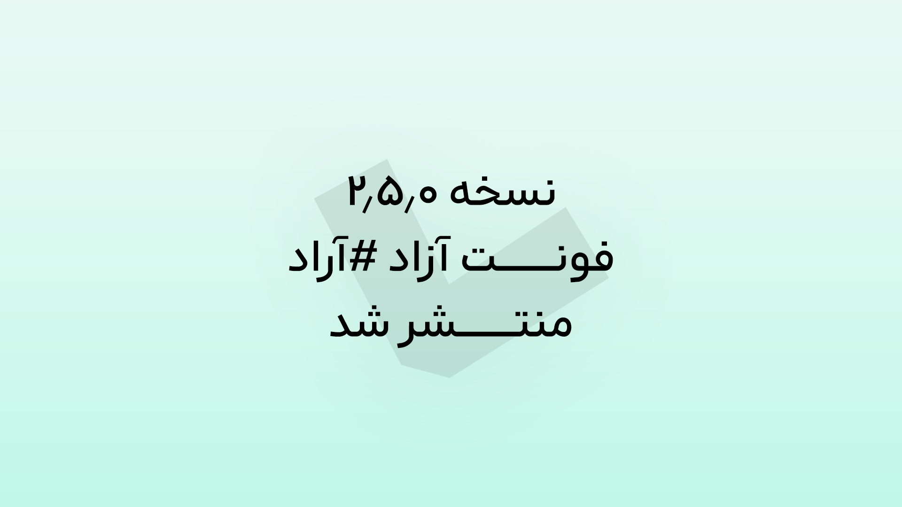
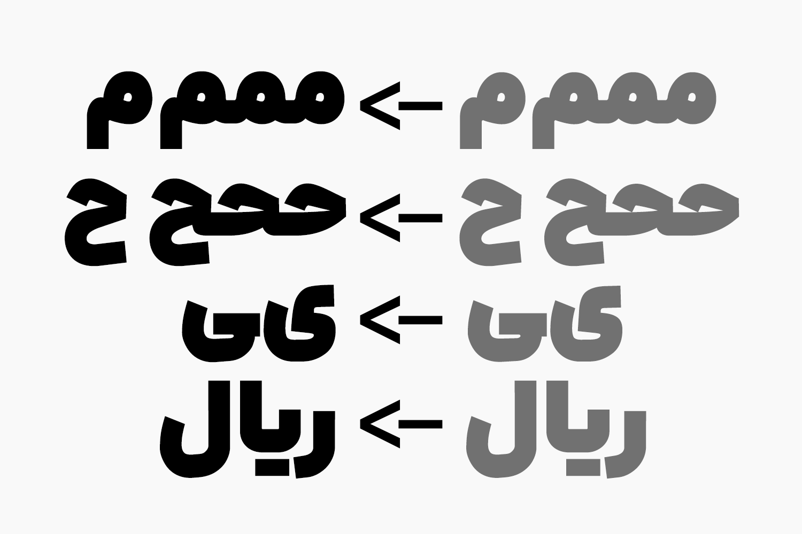
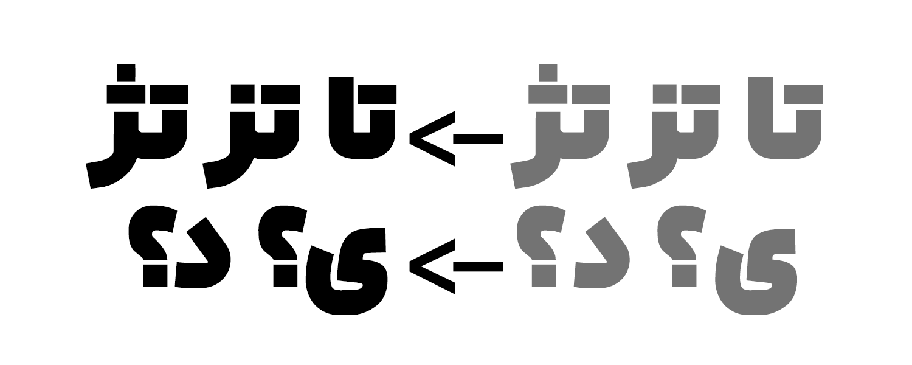

۱۱ مرداد ۱۴۰۵ • نوشته شده توسط محمد درویشی
در بروزرسانی تابستانی فونت آراد، تمرکز اصلی روی جزئیات بوده است. از اصلاح فرم گلیفها تا بهبود کرنینگها و بازبینی جایگزینهای اجباری. مجموعهای از تغییرات کوچک اما مؤثر اعمال شدهاند تا تجربهٔ تایپ و کیفیت نهایی فونت بهتر از قبل باشد.


برای دانلود این نسخه، به این پیوند مراجعه کنید.